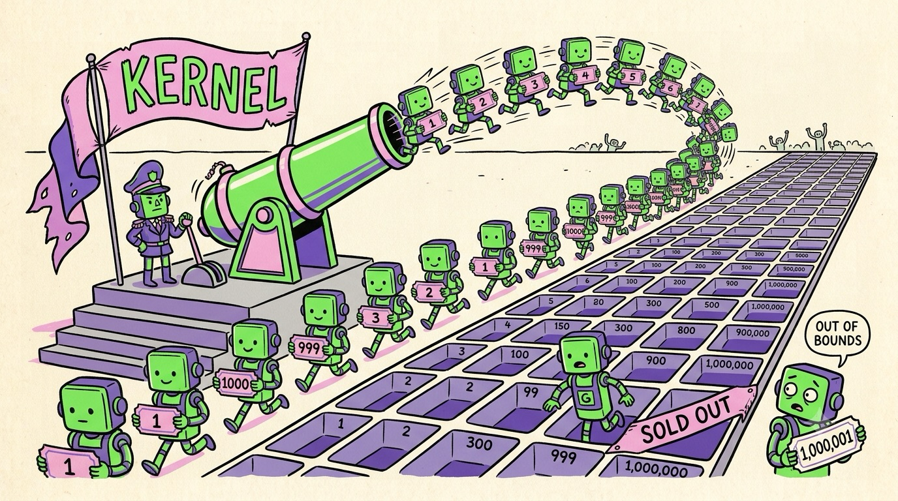

Chapter 04 · The Software
Programming the Beast: Kernels, Blocks & Grids
Time to write actual GPU code. The style will feel upside-down at first: on a CPU you write a loop that visits every element; on a GPU you write the body of the loop once, and launch a hundred thousand threads that each run it on one element. You don't iterate over the data — you carpet-bomb it with threads. Let's see it for real, in CUDA C++.
Your first kernel
The function that runs on the GPU is called a kernel.
Here's the "hello world" of GPU computing — adding two arrays, c[i] = a[i] +
b[i], for a million elements:
vector_add.cu — the loop body becomes the program// CPU version: one thread visits every element
for (int i = 0; i < N; i++) c[i] = a[i] + b[i];
// GPU version: a million threads, each visits ONE element
__global__ void vector_add(float* a, float* b, float* c, int n) {
int i = blockIdx.x * blockDim.x + threadIdx.x; // who am I?
if (i < n) // don't run off the end
c[i] = a[i] + b[i]; // my one element
}
Three things to notice, in the order I'd point them out over your shoulder:
__global__marks this as GPU code, callable from the CPU.- There's no loop. The loop is implicit: launching the kernel runs this body once per thread.
- The first line is the famous incantation. Every thread runs identical code, so the only way to give each thread different work is for it to compute its own index from coordinates the hardware hands it.
The thread hierarchy: grid → block → thread
You never launch "a million loose threads." CUDA organizes them in a hierarchy with exactly three levels, and each level maps to hardware you already met in Chapter 3:
Launching is one line — the weird triple-angle-bracket syntax picks the shape of the grid:
launching a million threadsint N = 1'000'000;
int threads = 256; // threads per block (a good default)
int blocks = (N + threads - 1) / threads; // 3,907 blocks to cover N
vector_add<<<blocks, threads>>>(a, b, c, N); // go!
Because they make the same program scale across every GPU. Blocks can't talk to each other, so the hardware may run them in any order, on any SM, on a cheap laptop GPU with 20 SMs or a monster with 170. The GPU just deals blocks onto SMs like cards until the deck is empty. Your code doesn't change. That independence is the price — and the payoff — of the design.
One more real example: threads in 2D
Indices can be 2D or 3D, which fits images and matrices beautifully. Here's the heart of an image-blur kernel — each thread owns one pixel:
blur.cu — one thread per pixel__global__ void blur(uchar* in, uchar* out, int w, int h) {
int x = blockIdx.x * blockDim.x + threadIdx.x;
int y = blockIdx.y * blockDim.y + threadIdx.y;
if (x >= w || y >= h) return;
int sum = 0;
for (int dy = -1; dy <= 1; dy++) // tiny 3×3 neighborhood loop —
for (int dx = -1; dx <= 1; dx++) // loops INSIDE a thread are fine!
sum += in[clamp(y+dy,0,h-1)*w + clamp(x+dx,0,w-1)];
out[y*w + x] = sum / 9;
}
Notice the little loops inside the kernel — that's normal. The rule isn't "no loops," it's "the big loop over the data becomes the thread grid."
The CPU is still the boss
A GPU program is always a duet. The CPU (the "host") allocates GPU memory, copies
input data over the PCIe bus, launches kernels, and copies results back. The GPU
(the "device") does the heavy lifting. A typical flow:
cudaMalloc → cudaMemcpy (to GPU) → launch kernel →
cudaMemcpy (back). Kernel launches are asynchronous — the CPU
fires and moves on, which is how frameworks overlap CPU and GPU work.
Those copies aren't free — PCIe moves tens of GB/s while the GPU's own memory moves thousands. The classic beginner faceplant: GPU-accelerate a tiny computation, then wonder why it got slower. The math took 2 µs; the copies took 2 ms. Rule: move data once, do a LOT of work on it, move it back once. (This, by the way, is why LLM weights are loaded onto the GPU once and then live there for millions of requests.)

A funny zine-style cartoon, hand-drawn ink with flat colors (electric green, violet, pink on cream paper): a tiny CPU general on a podium with a flag labeled "KERNEL" launching an enormous parade of thousands of identical cute worker robots out of a cannon; each robot clutches a numbered raffle ticket and sprints toward a gigantic egg-carton grid of slots stretching to the horizon, each robot diving into exactly one slot. One confused robot holds ticket "1,000,001" in front of a "SOLD OUT" slot (the bounds check joke). Exaggerated, playful, no other small text. Target size ~1280×720px, 16:9 landscape; composed for a small on-page figure, subject centred with safe margins — it is letterboxed into a 16:9 box, so keep nothing important near the edges.
Generate this with your image agent, then drop the file here.
blockIdx.x * blockDim.x + threadIdx.x. The one at the sold-out slot is
why we write if (i < n).GPU programming = describe one thread's tiny job + pick the grid
shape. Everything else — scheduling, warping, latency hiding — the
hardware does. And you rarely start from scratch: PyTorch, JAX, and friends
generate and call kernels like these under the hood every time you type
a @ b. Now you know what that innocent @ unleashes.
We've been politely ignoring a question, though: our million threads all read from arrays in GPU memory. How fast is that memory? Oh, you have no idea how much that question matters. Next page.
Sources NVIDIA CUDA C++ Programming Guide, "Programming Model" (docs.nvidia.com) · NVIDIA Technical Blog, "CUDA Refresher: The CUDA Programming Model" (developer.nvidia.com) · Cornell Virtual Workshop, "Introduction to CUDA" (cvw.cac.cornell.edu)